<!DOCTYPE html>
<html>
    <head>
        <title>Study on Line Tracing Task | LPNC</title>

        <!-- jsPsych core library and plugins -->
      <script src="jspsych-6.3.0/jspsych.js"></script>
      <script src="jspsych-6.3.0/plugins/jspsych-html-keyboard-response.js"></script>
      <script src="jspsych-6.3.0/plugins/jspsych-html-slider-response.js"></script>
      <script src="jspsych-6.3.0/plugins/jspsych-image-keyboard-response.js"></script>
      <script src="jspsych-6.3.0/plugins/jspsych-preload.js"></script>
      <script src="jspsych-6.3.0/plugins/jspsych-call_function.js"></script>
      <script src="jspsych-6.3.0/plugins/jspsych-html-button-response.js"></script>
      <script src="jspsych-6.3.0/plugins/jspsych-survey-likert.js"></script>
      <script src="jspsych-6.3.0/plugins/jspsych-fullscreen.js"></script>
      <script src="jspsych-6.3.0/plugins/jspsych-survey-multi-choice.js"></script>
      <script src="jspsych-6.3.0/plugins/jspsych-survey-text.js"></script>
      <script src="jspsych-6.3.0/css/jspsych.css"></script>
      <script src="jspsych-line-tracing_v2.js"></script>
      <link href="jspsych-6.3.0/css/jspsych.css" rel="stylesheet" type="text/css">

      <!-- Line tracing task -->
      <script src="task/base64.js" type="text/javascript"></script>
      <script src="task/canvas2image.js" type="text/javascript"></script>
      <script src="task/jquery.js" type="text/javascript"></script>
      <script src="task/color_trace.js" type="text/javascript"></script>
      <link rel="stylesheet" href="css/custom.css"></link>

  </head>
  <body></body>

  <script>

/* Preload images */
  var preloadimages = ['img/milo_hello.gif',
                       'img/milo_showing_right.png',
                       'img/instructions1.png',
                       'img/instructions1bis.png',
                       'img/instructions2bis.png',
                       'img/instructions3.png',
                       'img/instructions4.png',
                       'img/instructions5.png',
                       'img/milo_showing_points.png',
                       'img/level1.png',
                       'img/level2.png',
                       'img/level3.png',
                       'img/conf_scale_0.png',
                       'img/conf_scale_1.png',
                       'img/conf_scale_2.png',
                       'img/conf_scale_3.png',
                       'img/conf_scale_4.png',
                       'img/win.png',
                       ];


/* welcome message */
      var welcome = {
        type: "html-button-response",
        choices: ["&#10095;"],
        stimulus: `
        <p class = "custom-font">Bonjour ! Bienvenue dans ce jeu. <br>
        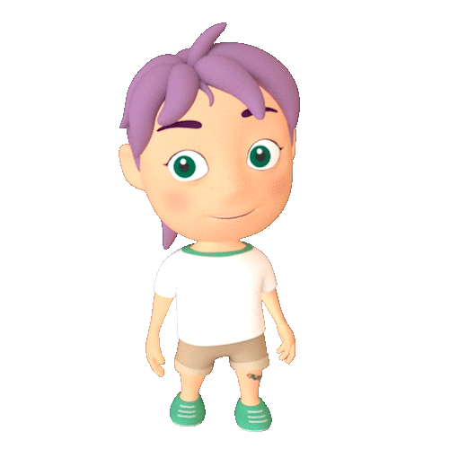
        <br>
        Je m'appelle Milo et c'est moi qui vais te guider dans cette nouvelle aventure !</p>
        <br>
        <p class = "continue-instructions">Appuie sur la flèche pour me suivre.</p>
        `,
      };


/* switching to fullscreen */
      var fullscreen = {
        type: 'fullscreen',
        message: `<p class = "custom-font">Pour commencer ce jeu, clique sur le bouton "Commencer"</p>`,
        button_label: 'Commencer',
        fullscreen_mode: true
      };

/* instructions trial */

      //general1
      var instructions_1 = {
          type: "html-button-response",
          choices: ["&#10095;"],
          stimulus: `
          <p class = "custom-font">Un dessin va apparaître sur l'écran.</p>
          <p class = "custom-font">Tu devras le redessiner le plus précisément possible en bougeant ta souris.</p>
          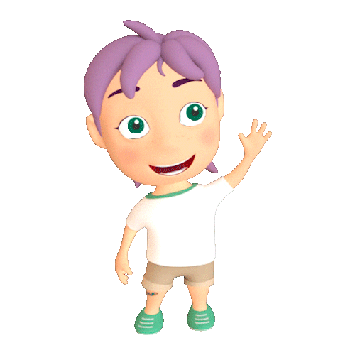
          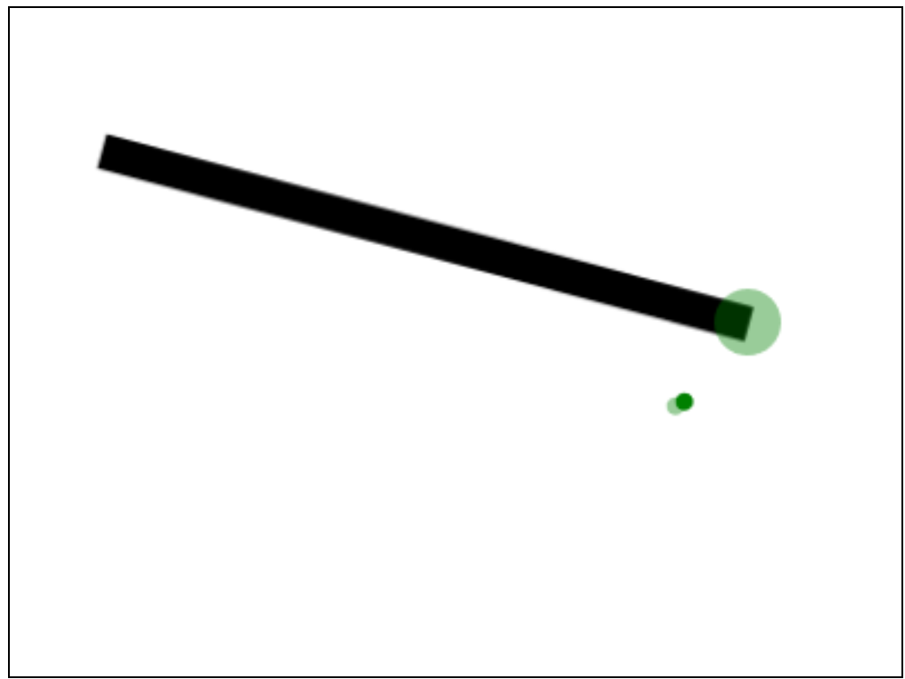
          <p class = "continue-instructions">Appuie sur la flèche pour continuer.</p>
          `,
            };

      //general2
      var instructions_2 = {
          type: "html-button-response",
          choices: ["&#10095;"],
          stimulus: `
          <p class = "custom-font">Pour commencer le jeu, tu vas devoir cliquer sur le rond vert : c'est le point de départ.</p>
          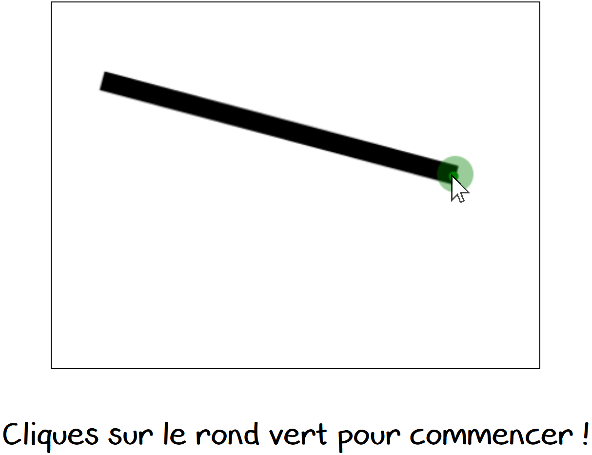
          <p class = "custom-font">Un rond rouge va alors apparaître : c'est le point d'arrivée. </p>
          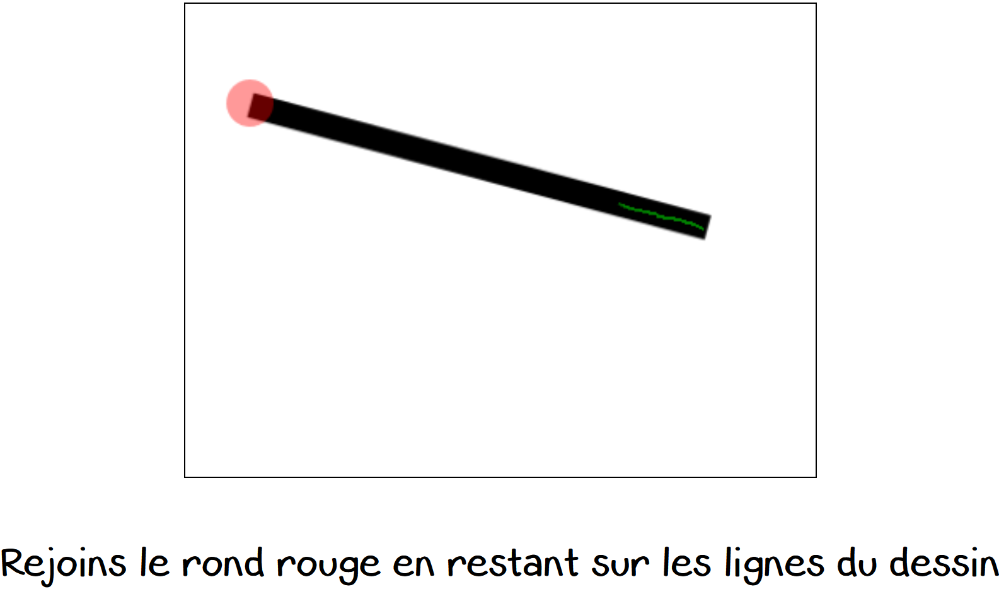
          <p class = "custom-font">Le but est d'arriver sur le rond rouge en restant le plus possible sur les lignes du dessin.</p>
          <p class = "continue-instructions">Appuie sur la flèche pour commencer le jeu.</p>
          `,
            };

      //general3
      var instructions_3 = {
          type: "html-button-response",
          choices: ["&#10095;"],
          stimulus: `
          <p class = "custom-font">Lorsque tu restes sur les lignes du dessin, ton tracé est vert, et tu gagnes des points.</p>
          <p class = "custom-font">Lorsque tu sors des lignes du dessin, ton tracé est rouge, et tu perds des points.</p>
          <p class = "custom-font">Le but est de gagner le plus de points possible.</p>
          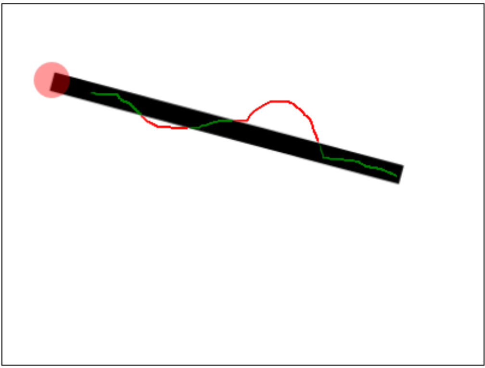
          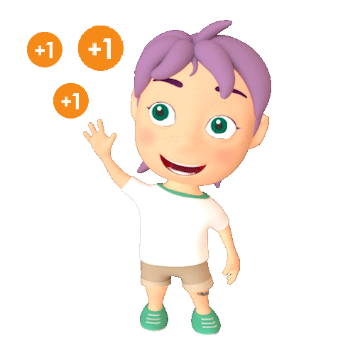
          <p class = "continue-instructions">Appuie sur la flèche pour commencer le jeu.</p>
          `,
            };

      //level1
      var level1 = {
          type: "html-button-response",
          choices: ["&#10095;"],
          stimulus: `
          <p class = "custom-font">Dans ce jeu, il y a aura trois niveaux.</p>
          <p class = "custom-font">Commençons par le premier niveau ! Tu es prêt(e) ?</p>
          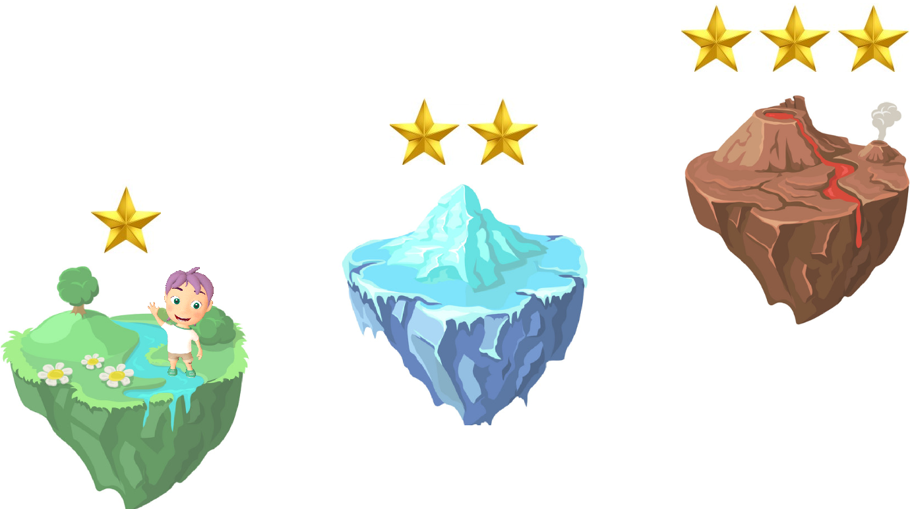
          <p class = "continue-instructions">Appuie sur la flèche pour commencer le jeu.</p>
          `,
            };

      //level2
      var level2 = {
          type: "html-button-response",
          choices: ["&#10095;"],
          stimulus: `
          <p class = "custom-font">Bravo ! Tu as fini le premier niveau.</p>
          <p class = "custom-font">Continuons avec le deuxième niveau ! </p>
          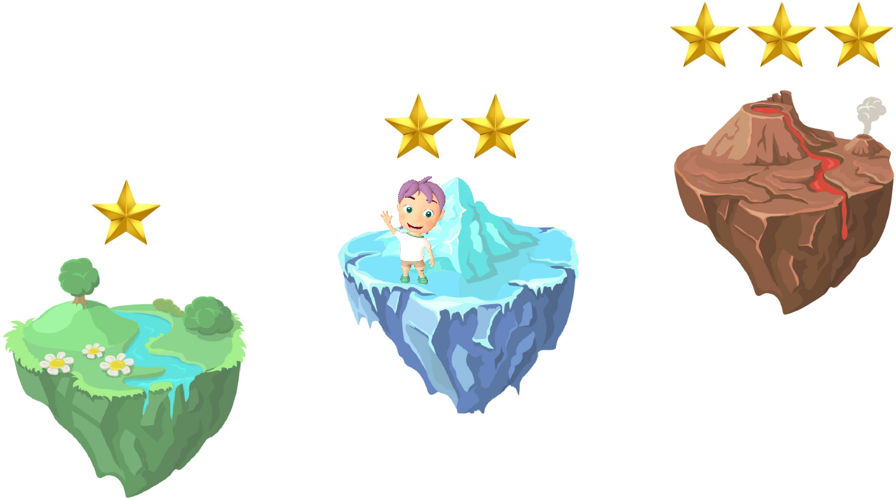
          <p class = "continue-instructions">Appuie sur la flèche pour passer au deuxième niveau.</p>
          `,
            };

      //level3
      var level3 = {
          type: "html-button-response",
          choices: ["&#10095;"],
          stimulus: `
          <p class = "custom-font">Bravo ! Tu as fini le deuxième niveau.</p>
          <p class = "custom-font">Continuons avec le troisième et dernier niveau ! </p>
          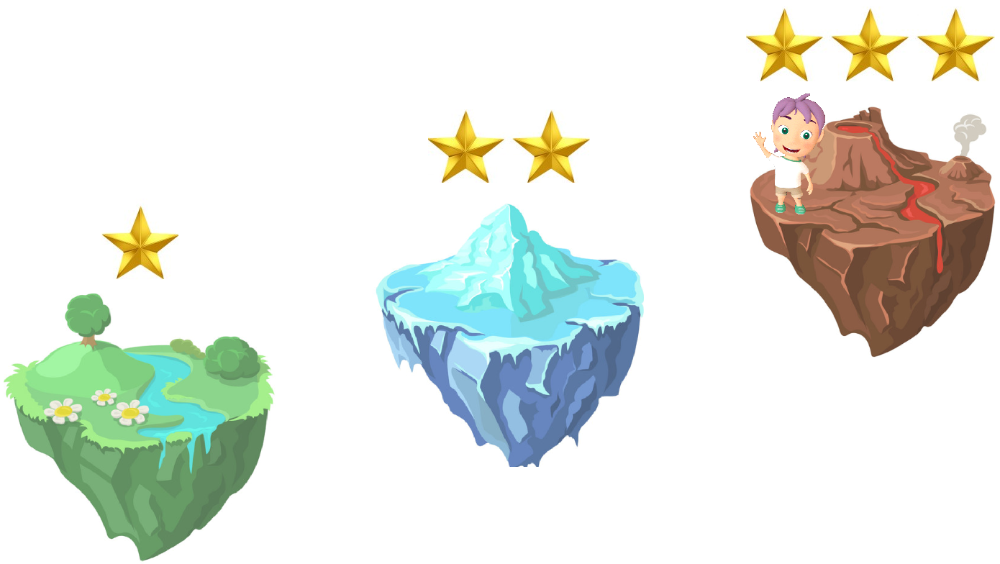
          <p class = "continue-instructions">Appuie sur la flèche pour passer au troisième niveau.</p>
          `,
            };


      //training phase 1 : with both visual and score feedback
      // var instructions_all_feedback = {
      //     type: "html-button-response",
      //     choices: ["&#10095;"],
      //     stimulus: `
      //     <p class = "custom-font"> </p>
      //     <p class = "continue-instructions">Appuie sur la flèche pour commencer le jeu.</p>
      //     `,
      //       };


      //training phase 2 : only score feedback
      var instructions_score_feedback = {
          type: "html-button-response",
          choices: ["&#10095;"],
          stimulus: `
          <p class = "custom-font"> A partir de maintenant, le jeu va se compliquer ! </p>
          <p class = "custom-font"> Tu ne verras plus où tu es en train de dessiner mais tu verras la souris ! </p>
          <p class = "custom-font"> Essaies de rester le plus possible sur les lignes pour marquer des points ! </p>
          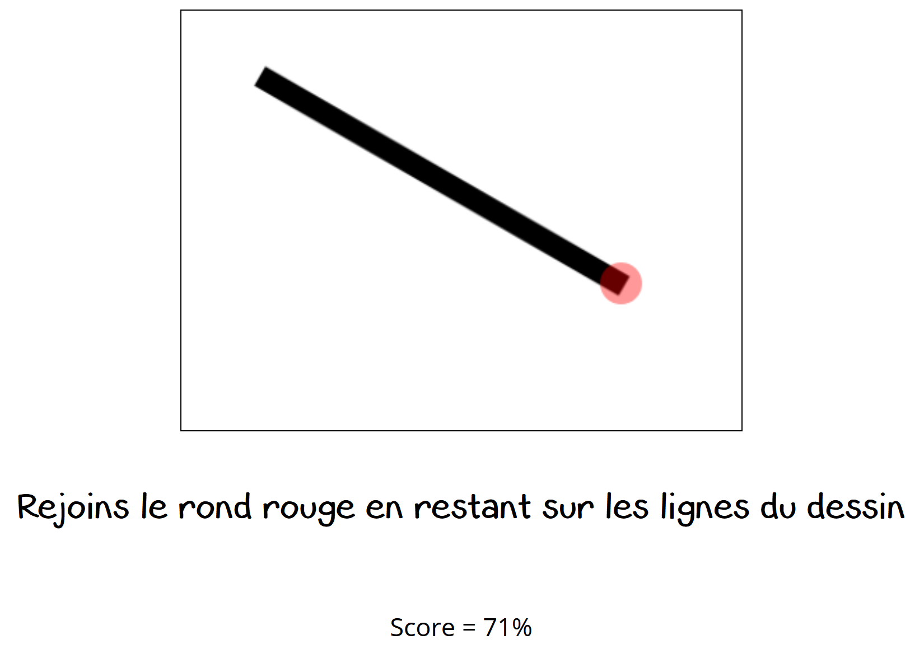
          <p class = "continue-instructions">Appuie sur la flèche pour commencer le jeu.</p>
          `,
            };

      //test phase without feedback
      var instructions_test = {
          type: "html-button-response",
          choices: ["&#10095;"],
          stimulus: `
          <p class = "custom-font"> A partir de maintenant, le jeu va encore se compliquer ! </p>
          <p class = "custom-font"> Tu ne verras plus où tu es en train de dessiner, ni la souris ! </p>
          <p class = "custom-font"> Essaies de rester le plus possible sur les lignes ! </p>
          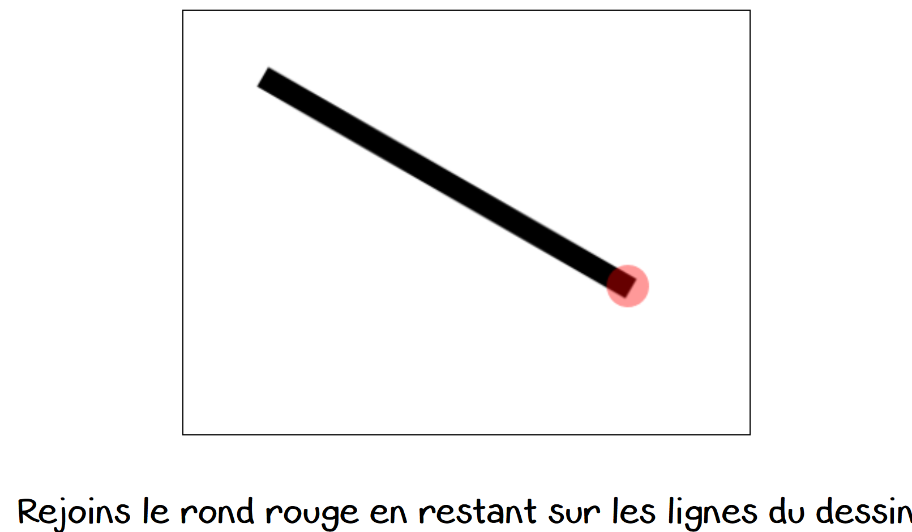
          <p class = "continue-instructions">Appuie sur la flèche pour commencer le jeu.</p>
          `,
            };


/* Line tracing task */

// defining the timeline variables

//yoann

var training_all_feedback_stimuli_new = [
  {figure_orientation: "0",   x_start: 250, y_start: 250, x_end: 250, y_end: 50},
  {figure_orientation: "10",  x_start: 250, y_start: 250, x_end: 283, y_end: 53},
  {figure_orientation: "20",  x_start: 250, y_start: 250, x_end: 318, y_end: 63},
  {figure_orientation: "30",  x_start: 250, y_start: 250, x_end: 349, y_end: 76},
  {figure_orientation: "40",  x_start: 250, y_start: 250, x_end: 377, y_end: 97},
  {figure_orientation: "50",  x_start: 250, y_start: 250, x_end: 403, y_end: 121},
  {figure_orientation: "60",  x_start: 250, y_start: 250, x_end: 423, y_end: 149},
  {figure_orientation: "70",  x_start: 250, y_start: 250, x_end: 436, y_end: 181},
  {figure_orientation: "80",  x_start: 250, y_start: 250, x_end: 445, y_end: 215},
  {figure_orientation: "90",  x_start: 250, y_start: 250, x_end: 450, y_end: 250},
  {figure_orientation: "100", x_start: 250, y_start: 250, x_end: 445, y_end: 283},
  {figure_orientation: "110", x_start: 250, y_start: 250, x_end: 436, y_end: 318},
  {figure_orientation: "120", x_start: 250, y_start: 250, x_end: 423, y_end: 348},
  {figure_orientation: "130", x_start: 250, y_start: 250, x_end: 403, y_end: 377},
  {figure_orientation: "140", x_start: 250, y_start: 250, x_end: 377, y_end: 402},
  {figure_orientation: "150", x_start: 250, y_start: 250, x_end: 349, y_end: 422},
  {figure_orientation: "160", x_start: 250, y_start: 250, x_end: 318, y_end: 437},
  {figure_orientation: "170", x_start: 250, y_start: 250, x_end: 283, y_end: 447},
  {figure_orientation: "180", x_start: 250, y_start: 250, x_end: 250, y_end: 450},
  {figure_orientation: "190", x_start: 250, y_start: 250, x_end: 215, y_end: 447},
  {figure_orientation: "200", x_start: 250, y_start: 250, x_end: 180, y_end: 437},
  {figure_orientation: "210", x_start: 250, y_start: 250, x_end: 148, y_end: 422},
  {figure_orientation: "220", x_start: 250, y_start: 250, x_end: 120, y_end: 402},
  {figure_orientation: "230", x_start: 250, y_start: 250, x_end: 95,  y_end: 377},
  {figure_orientation: "240", x_start: 250, y_start: 250, x_end: 76,  y_end: 348},
  {figure_orientation: "250", x_start: 250, y_start: 250, x_end: 62,  y_end: 318},
  {figure_orientation: "260", x_start: 250, y_start: 250, x_end: 54,  y_end: 283},
  {figure_orientation: "270", x_start: 250, y_start: 250, x_end: 50,  y_end: 250},
  {figure_orientation: "280", x_start: 250, y_start: 250, x_end: 54,  y_end: 215},
  {figure_orientation: "290", x_start: 250, y_start: 250, x_end: 63,  y_end: 181},
  {figure_orientation: "300", x_start: 250, y_start: 250, x_end: 76,  y_end: 149},
  {figure_orientation: "310", x_start: 250, y_start: 250, x_end: 95,  y_end: 121},
  {figure_orientation: "320", x_start: 250, y_start: 250, x_end: 120, y_end: 97},
  {figure_orientation: "330", x_start: 250, y_start: 250, x_end: 149, y_end: 76},
  {figure_orientation: "340", x_start: 250, y_start: 250, x_end: 181, y_end: 63},
  {figure_orientation: "350", x_start: 250, y_start: 250, x_end: 214, y_end: 53},
];

var training_all_feedback_stimuli = [
  // {figure_number: 0, },
  // {figure_number: 1, },
  // {figure_number: 2, },
  // {figure_number: 3, },
  // {figure_number: 4, },
  // {figure_number: 5, },
  // {figure_number: 6, },
  {figure_number: 12, },
  {figure_number: 13, },
  {figure_number: 14, },
  {figure_number: 15, },
  {figure_number: 16, },

];

var training_score_feedback_stimuli = [
  // {figure_number: 1, },
  // {figure_number: 1, },
  // {figure_number: 2, },
  // {figure_number: 3, },
  {figure_number: 12, },
  {figure_number: 13, },
  {figure_number: 14, },
  {figure_number: 15, },
  {figure_number: 16, },

];

var test_stimuli = [
  // {figure_number: 1, },
  {figure_number: 12, },
  {figure_number: 13, },
  {figure_number: 14, },
  {figure_number: 15, },
  {figure_number: 16, },
];

// -------- psychophysical scale ---------

// Defining the psychophysical scale
var n_consecutive_success = 0;
var n_consecutive_failure = 0;
// var actual_score = 99;
// var guessed_score = 99;
var figure_difficulty = 1;
// var success = true;

//yoann
// 0: training phase with visual and score feedback
var training_all_feedback_new = {
  type: "jspsych-line-tracing",
  figure_number: 0,
  // figure_name: jsPsych.timelineVariable('figure_orientation'),
  x_start: jsPsych.timelineVariable('x_start'),
  y_start: jsPsych.timelineVariable('y_start'),
  x_end: jsPsych.timelineVariable('x_end'),
  y_end: jsPsych.timelineVariable('y_end'),
  trace_color: "color",
  score_feedback: true,
  final_score_feedback: true,
  start_instructions: `<p class = "custom-font">Clique sur le rond vert pour commencer !</p>`,
  draw_instructions: `<p class = "custom-font">Rejoins le rond rouge en restant sur les lignes du dessin</p>`,
  end_instructions: `<p class = "custom-font">Tu as fini ce dessin. Bravo !</p>`,
  stimulus: '',
  prompt: '',
  choices: ["&#10095;"],
  on_start: function(training_all_feedback) {
    figure_orientation = jsPsych.timelineVariable('figure_orientation');
    training_all_feedback.figure_name = figure_orientation + "_" + figure_difficulty;
  },
  data: {},
  on_finish: function(data){
    data_score = data.score;
    if (data_score > 5) {
      var success = true;
    } else {
      var success = false;
    };
    // increment consecutive success/failure
    if (success == true) {
      n_consecutive_success = n_consecutive_success + 1;
      n_consecutive_failure = 0;
    } else {
      n_consecutive_failure = n_consecutive_failure + 1;
      n_consecutive_success = 0;
    };

    // check whether there are 2 consecutive failures/success
    // if so, adapt the difficulty accordingly
    if (n_consecutive_success == 2) {
      figure_difficulty = figure_difficulty - 0.5;
      n_consecutive_success = 0;
    } else if (n_consecutive_failure == 1) {
      figure_difficulty = figure_difficulty + 0.5;
      n_consecutive_failure = 0;
    } else {
      figure_difficulty = figure_difficulty;
    };
  },
};


// 1: training phase with visual and score feedback
var training_all_feedback = {
  type: "jspsych-line-tracing",
  // Because we define the figure number at the onset of the trial, we do not need to specify it here.
  // figure_number: jsPsych.timelineVariable('figure_number'),
  trace_color: "color",
  score_feedback: true,
  final_score_feedback: true,
  start_instructions: `<p class = "custom-font">Clique sur le rond vert pour commencer !</p>`,
  draw_instructions: `<p class = "custom-font">Rejoins le rond rouge en restant sur les lignes du dessin</p>`,
  end_instructions: `<p class = "custom-font">Tu as fini ce dessin. Bravo !</p>`,
  stimulus: '',
  prompt: '',
  choices: ["&#10095;"],
  on_start: function(training_all_feedback) {
    training_all_feedback.figure_number = figure_difficulty;
  },
  data: {},
  on_finish: function(data){
  data_score = data.score;
  data_score_falsed = data_score -1;
}
};

// 2: training phase with score feedback only (no visual feedback)
var training_score_feedback = {
  type: "jspsych-line-tracing",
  figure_number: jsPsych.timelineVariable('figure_number'),
  trace_color: "transparent",
  score_feedback: false,
  final_score_feedback: true,
  cursor_display: true,
  start_instructions: `<p class = "custom-font">Clique sur le rond vert pour commencer !</p>`,
  draw_instructions: `<p class = "custom-font">Rejoins le rond rouge en restant sur les lignes du dessin</p>`,
  end_instructions: `<p class = "custom-font">Tu as fini ce dessin. Bravo ! </p>`,
  stimulus: ``,
  prompt: '',
  choices: ["&#10095;"],
  data: {},
  on_finish: function(data){
    data_score = data.score;
    data_score_falsed = data_score -1;
}
};

// 3: test phase : without feedback
var test_phase = {
  type: "jspsych-line-tracing",
  figure_number: jsPsych.timelineVariable('figure_number'),
  trace_color: "transparent",
  score_feedback: false,
  final_score_feedback: false,
  start_instructions: `<p class = "custom-font">Clique sur le rond vert pour commencer !</p>`,
  draw_instructions: `<p class = "custom-font">Rejoins le rond rouge en restant sur les lignes du dessin</p>`,
  end_instructions: `<p class = "custom-font">Tu as fini ce dessin. Bravo !</p>`,
  stimulus: ``,
  prompt: '',
  choices: ["&#10095;"],
  data: {},
  on_finish: function(data){
    data_score = data.score;
    data_score_falsed = data_score -1;
  }
};

/* Precition */
var prediction = {
    type: 'html-slider-response',
    stimulus:"<p class = 'custom-font'>A ton avis, sur un maximum de 10, quel score as-tu fait?</p>",
    labels: ["<p class = 'custom-font'>0 <br> 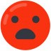<br></p>",
             "<p class = 'custom-font'>1 <br><br></p>",
             "<p class = 'custom-font'>2 <br><br></p>",
             "<p class = 'custom-font'>3 <br><br></p>",
             "<p class = 'custom-font'>4 <br><br></p>",
             "<p class = 'custom-font'>5 <br> 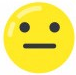<br></p>",
             "<p class = 'custom-font'>6 <br><br></p>",
             "<p class = 'custom-font'>7 <br><br></p>",
             "<p class = 'custom-font'>8 <br><br></p>",
             "<p class = 'custom-font'>9 <br><br></p>",
             "<p class = 'custom-font'>10 <br> 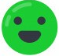<br></p>"
           ],
    min: 0,
    max: 10,
    step: 1,
    slider_start: 5,
    prompt: "<p class = 'custom-font'> <br> </p>",
    require_movement: true,
    button_label: "&#10095;",
};


/* Two alternative force choice */

    //2afc
    var twoafc = {
      type: 'html-button-response',
      stimulus: `
      <p class = "custom-font"> Je vais maintenant te montrer deux scores : un seul des deux est le tien.</p>
      <p class = "custom-font">A ton avis, lequel est le tien ? Clique dessus !</p>
      `,
      choices: [,],
      prompt: "<p></p>",
      on_start: function(twoafc) {
        var choices_random = jsPsych.randomization.shuffle([0, 1]);
        twoafc.choices[choices_random[0]] = Math.round(data_score);
        twoafc.choices[choices_random[1]] = Math.round(data_score_falsed);
        choice_0 = twoafc.choices[0];
        choice_1 = twoafc.choices[1];
        choices_01 = [choice_0, choice_1];
      },
      on_finish: function(data) {
        chosen_score = choices_01[data.response];

        if (Math.round(data_score) == chosen_score) {
          var success = true;
        } else {
          var success = false;
        };
        // increment consecutive success/failure
        if (success == true) {
          n_consecutive_success = n_consecutive_success + 1;
          n_consecutive_failure = 0;
        } else {
          n_consecutive_failure = n_consecutive_failure + 1;
          n_consecutive_success = 0;
        };

        // check whether there are 2 consecutive failures/success
        // if so, adapt the difficulty accordingly
        if (n_consecutive_success == 2) {
          figure_difficulty = figure_difficulty + 1;
          n_consecutive_success = 0;
        } else if (n_consecutive_failure == 2) {
          figure_difficulty = figure_difficulty - 1;
          n_consecutive_failure = 0;
        } else {
          figure_difficulty = figure_difficulty;
        };

      },
    };

    // var test = {
    //   type: 'html-button-response',
    //   stimulus: `
    //   <p class = "custom-font"> Je vais maintenant te montrer deux scores : un seul des deux est le tien.</p>
    //   <p class = "custom-font">A ton avis, lequel est le tien ? Clique dessus !</p>
    //   `,
    //   choices: [,],
    //   prompt: "<p></p>",
    //   on_start: function(test) {
    //     test.choices[0] = n_consecutive_success;
    //     test.choices[1] = figure_difficulty;
    //   },
    // };


/* Confidence scale */

    //scale
    var scale = [
      "<p class = 'custom-scale'>0 <br> Pas du tout sûr(e) <br><br> </p>",
      "<p class = 'custom-scale'>1 <br> <br><br> </p>",
      "<p class = 'custom-scale'>2 <br> <br><br> </p>",
      "<p class = 'custom-scale'>3 <br> <br><br> </p>",
      "<p class = 'custom-scale'>4 <br> Très sûr(e) <br><br> </p>",
      // "",
    ];

    //confidence scale
    var confidence = {
      type: 'survey-likert',
      questions: [
      {prompt: `
        <p class = "custom-font">Maintenant, demandes-toi à quel point tu es sûr(e) que ta réponse est correcte.</p>
        <p class = "custom-25px">Si tu n'es pas du tout sûr(e) de ta réponse, clique sur "0".</p>
        <p class = "custom-25px">Si tu es vraiment sûr(e) de ta réponse, clique sur "4".</p>`,
        labels: scale,
        required: true}
      ]
    };


/* Looping the procedure using timeline variables */

// 0: training phase with visual and score feedback
var training_all_feedback_procedure_new = {
  timeline: [
    training_all_feedback_new,
    prediction,
    // twoafc,
    // confidence,
    // test
  ],
  timeline_variables: training_all_feedback_stimuli_new,
  randomize_order: true,
  sample: {
          // without replacement: once a figure is picked, it cannot be picked again
          type: 'without-replacement',
          // number of trials of the procedure
          size: 20,
  }
};


// 1: training phase with visual and score feedback
var training_all_feedback_procedure = {
  timeline: [
    training_all_feedback,
    twoafc,
    confidence,
    // test
  ],
  timeline_variables: training_all_feedback_stimuli,
  randomize_order: true,
  sample: {
          // without replacement: once a figure is picked, it cannot be picked again
          // type: 'without-replacement',
          type: 'with-replacement',
          // number of trials of the procedure
          size: 3,
  }
};

// 2: training phase with score feedback only (no visual feedback)
var training_score_feedback_procedure = {
  timeline: [
    training_score_feedback,
    twoafc,
    confidence,
  ],
  timeline_variables: training_score_feedback_stimuli,
  randomize_order: true,
  sample: {
          // without replacement: once a figure is picked, it cannot be picked again
          type: 'without-replacement',
          // number of trials of the procedure
          size: 3,
  }
};

// 3: test phase : without feedback
var test_procedure = {
  timeline: [
    test_phase,
    twoafc,
    confidence,
  ],
  timeline_variables: test_stimuli,
  randomize_order: true,
  sample: {
          // without replacement: once a figure is picked, it cannot be picked again
          type: 'without-replacement',
          // number of trials of the procedure
          size: 5,
  }
};


/*End of the line tracing task*/

    var end_task = {
      type: "html-button-response",
      choices: ["&#10095;"],
      stimulus: `
        <p class = "custom-font">Bravo ! Tu as terminé le jeu et tu t'en es très bien sorti ! Merci d'avoir joué avec moi.</p>
        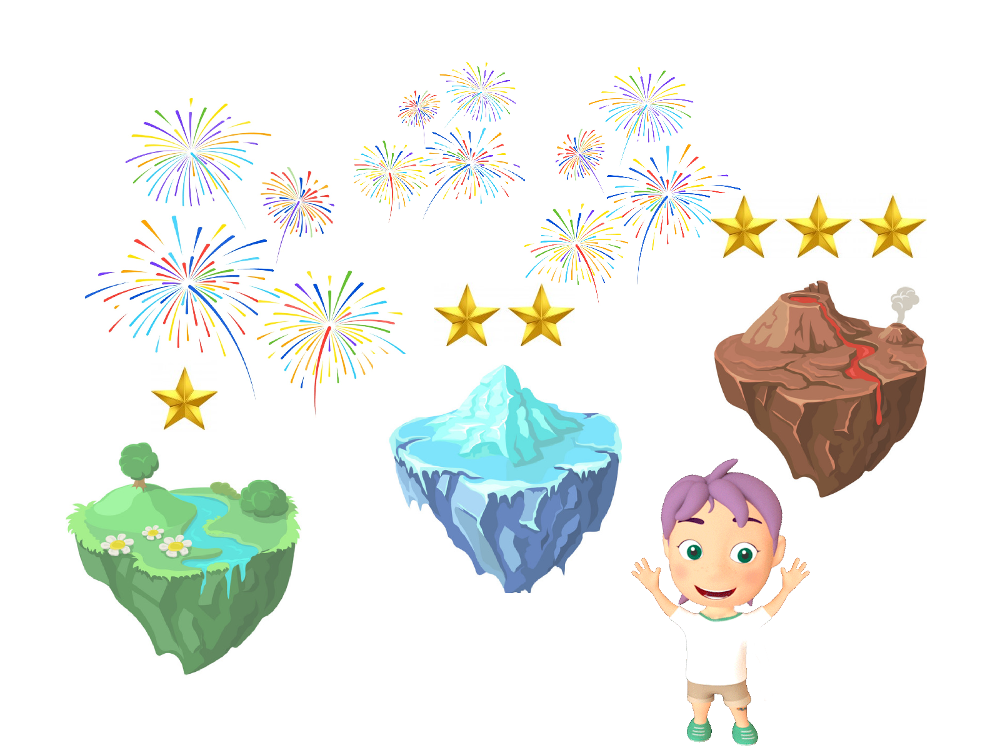
        <p class = "custom-font">Avant de partir, j'ai quelques questions pour toi !</p>
        <p class = "continue-instructions">Appuie sur la flèche pour continuer.</p>
        `,
    };


/* Demographic questions*/

    var age = {
       type: 'survey-text',
       questions: [{prompt: "<span class = 'custom-font'>Quel âge as-tu ?</span>", required : true}],
     };

    var sex = {
     type: 'survey-multi-choice',
     questions: [{prompt: "<span class = 'custom-font'>Tu es </span>",
     options: ["Un garçon", "Une fille", "Autre"],
     required: true, horizontal: true}],
     };

     var difficulty = {
      type: 'survey-multi-choice',
      questions: [{prompt: "<span class = 'custom-font'>Comment as-tu trouvé ce jeu ? </span>",
      options: ["Très difficile", "Difficile", "Facile", "Très facile"],
      required: true, horizontal: true}],
      };

    var comments = {
      type: 'survey-text',
      questions: [{prompt: "<p class = 'custom-font'>Cette question s'adresse aux parents.</p><p>Avez-vous des remarques concernant cet exercice (difficulté de la tâche, motivation de votre enfant...)</p>"}],
      };


/*End of full screen*/

        var fullscreen_exit = {
            type: 'fullscreen',
            fullscreen_mode: false
          };

/*End of study*/

    var ending = {
        type: "html-keyboard-response",
        stimulus: `
        <p class = "custom-font">Merci d'être allé au bout !</p>
        <p class = "custom-font">A bientôt peut être.</p>
        
      `};


/* create timeline */
    var timeline = [];
    timeline.push(welcome,
                  // fullscreen,
                  // level1,
                  // instructions_1,
                  // instructions_2,
                  // instructions_3,
                  // training_all_feedback_new,
                  training_all_feedback_procedure_new,
                  // training_all_feedback_procedure,
                  // level2,
                  // instructions_score_feedback,
                  // training_score_feedback_procedure,
                  // level3,
                  // instructions_test,
                  // test_procedure,
                  // end_task,
                  // age,
                  // sex,
                  // difficulty,
                  // comments,
                  fullscreen_exit,
                  ending);


  /* start the experiment */
      jsPsych.init({
        timeline: timeline,
        preload_images: preloadimages,
        show_progress_bar : true,
        on_finish: function(){
          jsPsych.data.displayData();
        }
        });


   </script>
</html>
